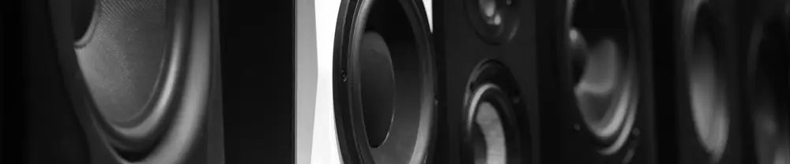

Panduan Kreatif: Cara Bikin Dudukan Speaker DIY dari Barang Bekas
Dipublikasikan pada 12 Agustus 2025

Apakah Anda hobi membuat speaker sendiri (DIY) di rumah? Salah satu masalah yang sering muncul, baik saat membuat speaker maupun proyek lainnya, adalah salah membeli bahan dengan ukuran yang tidak sesuai. Hal ini juga pernah dialami oleh tim Mas Tukang saat sedang merakit speaker.
Dalam proyek kali ini, kami menggunakan casing bekas speaker iPod Docking merk BOSE yang sudah rusak. Rencananya, casing ini akan kami modifikasi dengan komponen baru. Namun, kami malah membeli speaker merek Asoka berukuran 2 inch (8 Ohm, 12 Watt), padahal lubang pada casing BOSE berukuran 2.5 inch.
Karena ukurannya tidak cocok, kami pun harus mencari cara agar speaker baru tetap bisa digunakan. Dengan semangat irit dan kreatif, kami memutuskan untuk membuat dudukan speaker (adaptor) sendiri dari bahan bekas.
Langkah-Langkah Irit Membuat Dudukan Speaker
Berikut adalah panduan praktis untuk membuat dudukan speaker dari bahan bekas:
- Siapkan Bahan Bekas: Gunakan casing bekas UPS atau barang lain dengan ketebalan serupa. Casing plastik ini cukup kokoh untuk dijadikan dudukan.
- Gergaji Bahan: Gergaji casing bekas UPS sesuai dengan ukuran yang dapat menutup lubang speaker.
- Buat Lubang Speaker: Buat lingkaran seukuran speaker yang Anda beli (dalam kasus ini, 2 inch). Karena kami tidak punya hole saw, kami menggunakan paku panas untuk membuat lubang-lubang kecil yang berdekatan mengikuti pola lingkaran.
- Potong dan Haluskan: Setelah lubang paku siap, potong bagian tengahnya dengan pisau cutter. Kemudian, haluskan tepian lubang menggunakan besi yang sudah dipanaskan hingga rapi. Pastikan lubang pas dengan speaker. Jangan lupa sesuaikan posisi lubang baut agar pas dengan speaker.
- Pasang Speaker: Pasang speaker pada dudukan yang sudah dibuat, lalu kencangkan dengan baut. Untuk hasil terbaik, tambahkan wall foam sebagai busa penyekat suara pada dudukan tersebut.
- Instalasi: Pasangkan speaker yang sudah terpasang dudukan ke casing speaker BOSE.
Mudah, bukan? Jadi, jika Anda salah membeli ukuran speaker, Anda masih bisa mengakalinya dengan cara ini. Video singkat tentang cara membuat dudukan speaker dari casing bekas UPS dapat ditonton di bawah ini. Semoga bermanfaat!